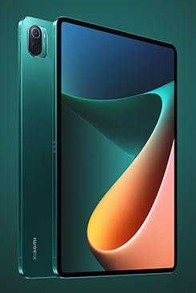
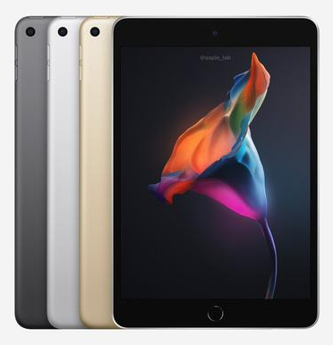

На рынке электроники представлен огромный ассортимент планшетов. Поэтому найти подходящую модель бывает достаточно сложно, особенно новичкам. Что нужно знать, чтобы купить качественный планшет с хорошими техническими характеристиками? Особенности и нюансы выбора.
Планшеты: выбираем качественную модель
Планшеты – современные мультимедийные устройства, которые способны справляться со многими задачами. По функциональности и возможностям они не уступают ноутбукам, а некоторые аппараты и вовсе обгоняют обычные компьютеры в плане производительности.

Применяются девайсы во многих сферах жизнедеятельности человека, будь то личное использование или бизнес сфера. Прежде чем приступить к выбору качественного планшета, например, такого, как Mi Pad 5, стоит ознакомиться с преимуществами гаджетов и ключевыми правилами выбора.
Основные преимущества планшетных компьютеров
Что касается достоинств аппаратов, то ключевым преимуществом является их мобильность. За счет малого веса и компактных размеров гаджетами можно пользоваться в любых условиях без каких-либо проблем. Плюс, благодаря высокой автономности, некоторые модели и вовсе можно брать с собой в путешествие.
Среди прочих плюсов планшетных компьютеров выделяют:
Некоторые аппараты могут оснащаться дополнительной защитой от механических воздействий, в том числе, от попадания влаги, что значительно продлевает их срок службы.
Нюансы выбора
Все представленные на рынке планшеты отличаются друг от друга имеющимися функциями и техническими характеристиками. Данный факт нужно учитывать при покупке планшетного компьютера.
Разрешение и диагональ экрана
Это первое, на что нужно обращать внимание при выборе устройства. Большинство аппаратов имеет разрешение экрана в 1920х1080 пикселей. Более дорогие модели могу оснащаться экранами с показателями в 2048х1536 и в 2560х1600 точек. Одним словом, чем выше разрешение, тем реалистичнее и приятнее получается картинка.
Что касается диагонали, устройства с большим экраном лучше подходят для работы с изображениями и текстовыми документами, чем приборы с размерами монитора меньше семи дюймов. На них удобней просматривать видео и играть в игры. Но нужно помнить, что размер диагонали тесно связан с разрешением.
Например, если девайс оснащен дисплеем в десять дюймов и имеет небольшое разрешение, изображение будет «рыхлым» и нечетким. И наоборот, если компактное устройство оснащено экраном с высокой плотностью пикселей, то пользователь не увидит улучшения качества картинки, зато увеличится нагрузка на процессор и аккумуляторную батарею.
В данном вопросе лидерами являются продукты компании Apple. Тот же iPad Pro 2021 обладает разрешением крана в 2732х2048 пикселей и диагональю 12,9 дюймов, что вполне хватает для комфортного просмотра фильмов и работы в разнообразных приложениях. Купить устройство можно в интернет-магазине Озон.
Процессор
В отличие от компьютеров, процессоры планшетов реализованы в виде единого чипа, где встроены:
Называется такая система однокристальной системой SoC, которую можно условно сравнить с материнской платой компьютера.
При выборе девайсов планшетного типа стоит уделять особое внимание технологическому процессу. Техпроцессом называют толщину транзисторного слоя, и измеряется он в нанометрах. Чем меньше размер транзисторов, тем больше на кристалле размещается ядер. А это, в свою очередь, повышает производительность аппарата.
Также стоит помнить о тактовой частоте процессора. Высокие показатели частоты позволяют процессору обрабатывать сразу несколько операций за конкретный промежуток времени. Правда, если отдать предпочтение быстродействию ядер, то придется расстаться с высокой автономностью гаджета.
Оперативная и встроенная память
Оперативная память (ОЗУ) необходима, чтобы обеспечить нормальную работу приложений. Она хранит и обрабатывает все данные, используемые планшетом в данный момент времени. В среднем объем памяти составляет от 1 до 2 ГБ. Это вполне хватает, чтобы запустить нетребовательную игру и параллельно включить музыку. Более мощные аппараты, например, iPad Mini 6, оснащаются уже 4 ГБ. На таких планшетах можно без проблем поиграть в более тяжелые игры или запустить ресурсоемкие приложения.

Что касается встроенной памяти, то аппараты планшетного типа могут оснащаться накопителями от 4 до 128 ГБ. При этом нужно помнить, что часть объема уходит на хранение предустановленных и системных приложений. Поэтому целесообразней брать планшеты с большим размером памяти или хотя бы приборы с поддержкой карт microSD, с помощью которых можно расширить возможности хранилища до 240 и больше ГБ.
Емкость аккумуляторной батареи
Хотя автономность планшетов зависит, по большей части, от оптимизации «операционки», манеры пользования гаджетом и характеристик экрана, емкость аккумулятора играет в данном вопросе не последнюю роль. Специалисты и опытные пользователи не советуют брать девайсы с аккумуляторами меньше 5 мАч. Такой батареи вряд ли хватит для работы мощных планшетов с оптимальным размером диагонали.
Прочие критерии
Когда основные технические характеристики подобраны, можно обратить внимание и на другие показатели планшетов. Сюда можно отнести наличие различных аудио- и видеовыходов, материал и расцветку корпуса, также не лишним будет присмотреть модели с защитным покрытием дисплея, чтобы продлить срок службы девайса. Кроме того, для большего удобства можно купить устройства с клавиатурой и стилусом.